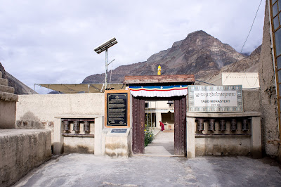

Tabo Monastery
ताबो मठ


Tabo Monastery takes its name from the village of Tabo in Spiti Valley, where it was established in 996 CE by the Tibetan translator-monk Rinchen Zangpo, acting on behalf of King Yeshe-Ö of the Guge kingdom in western Tibet. Its founding belongs to the 'Second Diffusion' of Buddhism across the trans-Himalayan belt, a deliberate royal project to revive and formalize monastic learning after an earlier decline. Set at the junction of two ancient trade routes linking Tibet with the Indian plains, Tabo was conceived from the outset as a centre of scholarship rather than a remote hermitage, and tradition holds that Yeshe-Ö himself took monastic vows and devoted royal resources to seeding a chain of such institutions, of which Tabo is the most completely preserved.
As the oldest continuously functioning Buddhist monastery in India and the wider Himalayan region, Tabo occupies a singular place among the subcontinent's living religious institutions, having never been abandoned or left to ruin since its tenth-century founding. It belongs to the Gelug order, the 'Yellow Hat' school later associated with the Dalai Lamas, and functions simultaneously as a working monastic community, a pilgrimage destination, and a protected heritage site. Its significance rests on a rare combination: a site of unbroken religious practice that is also an archive of early Tibetan Buddhist art, which has led the Archaeological Survey of India to list it as a monument of national importance and to propose it for UNESCO World Heritage recognition, citing it as the only complex of its kind in North India.
The monastery complex comprises nine temples, four stupas, and twenty-three chortens enclosed within a mud-brick compound built in the austere, flat-roofed style characteristic of early Tibetan religious architecture, deliberately plain on the exterior to preserve the sanctity of what lies within. A major renovation and expansion took place around 1042 CE under Jangchub-Ö, a successor of Yeshe-Ö, which added further structures to the original nucleus and is itself recorded in inscriptions inside the complex. The main assembly hall, the Dukhang, together with the Golden Temple (Serkhang) and the Mirror Temple (Tsug-Lakhang), houses extensive clay and stucco sculptures and wall murals dated to the tenth and eleventh centuries, painted in a provincial style drawing on Kashmiri, Ajanta-derived Indian, and Dunhuang Chinese influences, a stylistic blend that later art historians cited in coining its nickname, the 'Ajanta of the Himalayas.'
A severe earthquake in 1975 damaged parts of the complex, prompting reconstruction that included a new Dukhang assembly hall completed in 1983, built alongside rather than replacing the ancient temples so that the original murals and sculptures remained undisturbed. That rebuilt hall gained its own distinction when the 14th Dalai Lama chose it as the venue for Kalachakra initiation ceremonies in 1983 and again in 1996, drawing thousands of pilgrims to the otherwise sparsely populated valley and cementing Tabo's standing as an active centre of Gelug teaching rather than a purely archaeological curiosity. The coexistence of a functioning monastic school training young monks alongside temples holding irreplaceable medieval art is itself regarded as one of the complex's most distinctive features.
Today the monastery also maintains a separate set of meditation caves carved into the cliffs above the village, used historically and in recent decades by monks seeking seclusion, which visitors can view as an extension of the main complex. Conservation of the murals and structure is overseen jointly by the Archaeological Survey of India and the monastery's own administration, which has had to balance preservation against the practical pressures of tourism and pilgrimage traffic in a cold desert climate prone to seismic activity. The monastery continues to run as both a functioning Gelug institution and a protected heritage property, with monks conducting daily rituals in the old temples even as the ASI manages structural upkeep of the thousand-year-old mud-brick shell around them.
| Date of Introduction | March 22, 2022 |
|---|---|
| Address | Sub Postmaster, |
| Tabo SO, | |
| Lahaul and Spiti (dt.), Himachal Pradesh - 172113. |